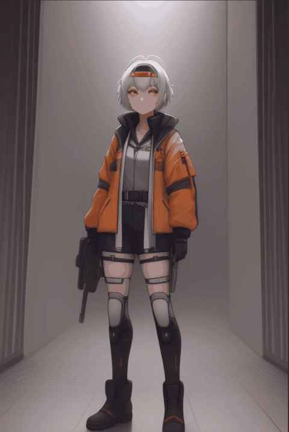
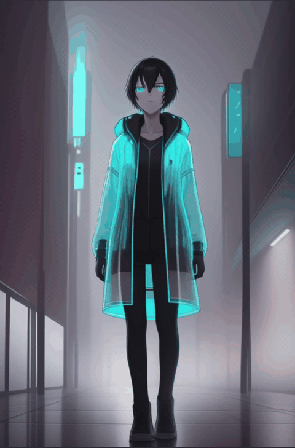

生成完整角色動畫 - 星港機械師少女

使用提示詞:
"0" :"1girl, original character, young sci-fi aircraft mechanic, short silver hair, amber goggles on head, navy blue mechanic jacket, white inner shirt, orange tool belt, black boots, standing on futuristic spaceport maintenance deck, holding a wrench, small aircraft behind her, sunset neon lighting, cinematic anime style",
"10" :"same character, short silver hair, amber goggles on head, navy mechanic jacket, white inner shirt, orange tool belt, checking a small aircraft engine, soft sparks, metal platform, futuristic spaceport, cinematic anime style",
"20" :"same character, short silver hair, amber goggles, navy mechanic jacket, orange tool belt, turning slightly toward camera, holding wrench, neon lights reflecting on wet metal floor, detailed anime style",
"30" :"same character, confident smile, wind moving short silver hair and navy jacket, small aircraft starting up behind her, orange and blue neon lighting, cinematic anime style",
"40" :"same character, raising one hand to adjust amber goggles, glowing aircraft engine behind her, tool belt visible, futuristic maintenance deck, detailed anime style",
"50" :"same character, looking upward at a flying vehicle passing overhead, short silver hair, navy mechanic jacket, neon spaceport background, dramatic lighting",
"60" :"same character, standing beside aircraft, orange tool belt visible, blue mechanic jacket, sparks and holographic panels around her, cinematic anime style",
"70" :"same character, walking slowly across metal maintenance deck, short silver hair, amber goggles, neon signs in background, confident expression",
"80" :"same character, close-up, confident expression, amber goggles catching neon reflection, short silver hair, futuristic spaceport atmosphere",
"90" :"same character, night spaceport, glowing aircraft lights, wind, navy mechanic jacket, orange tool belt, cinematic anime style",
"100" :"same character, standing proudly in front of repaired aircraft, short silver hair, amber goggles, neon blue and orange lighting, detailed anime style",
"110" :"same character, final pose, short silver hair, amber goggles, navy mechanic jacket, orange tool belt, futuristic aircraft taking off in background"
使用負面提示詞:
bad quality, worst quality, lowres, blurry, bad anatomy, bad hands, extra fingers, deformed face, inconsistent face, different character, different outfit, duplicate character, text, watermark, logo
生成完整角色動畫 - 霧城資料獵人少年

使用提示詞:
"0" :"1boy, original character, cyberpunk data hunter, short black hair, teal transparent raincoat, glowing headphones, black inner shirt, crossbody data bag, holding a glowing data chip, rainy futuristic city street, holographic signs, wet pavement reflections, mysterious expression, cinematic anime style",
"10" :"same character, short black hair, teal transparent raincoat, glowing headphones, crossbody data bag, looking at glowing data chip, rain falling, neon city alley, cinematic anime style",
"20" :"same character, short black hair, teal raincoat, glowing headphones, black inner shirt, walking through rain, holographic advertisements reflected on wet pavement, mysterious expression",
"30" :"same character, raising glowing data chip near his face, teal raincoat hood partly open, neon reflections, rainy cyberpunk street, detailed anime style",
"40" :"same character, turning quickly as if hearing footsteps, glowing headphones, crossbody data bag, rain droplets, blue and magenta city lights",
"50" :"same character, close-up, calm focused eyes, short black hair, glowing headphones, teal transparent raincoat, holographic code floating nearby",
"60" :"same character, running across a narrow city bridge, crossbody data bag swinging, neon signs, wet pavement, cinematic anime style",
"70" :"same character, stopping under a holographic sign, checking data chip, teal raincoat, glowing headphones, rainy night city",
"80" :"same character, half body shot, mysterious smile, data chip glowing in hand, reflections on transparent raincoat, cyberpunk atmosphere",
"90" :"same character, night rain intensifies, teal raincoat, glowing headphones, black inner shirt, standing before a giant holographic screen",
"100" :"same character, holding data chip toward camera, neon city behind him, short black hair, crossbody data bag, cinematic lighting",
"110" :"same character, final pose, teal transparent raincoat, glowing headphones, data chip shining, rainy futuristic city street background"
使用負面提示詞:
bad quality, worst quality, lowres, blurry, bad anatomy, bad hands, extra fingers, deformed face, inconsistent face, different character, different outfit, duplicate character, text, watermark, logo
生成完整角色動畫 - 月面花園守護者少女
使用提示詞:
"0" :"1girl, original character, lunar garden keeper, long pale lavender hair, white space jacket, transparent round helmet, small plant container on waist, gentle expression, standing inside a moon greenhouse dome, glowing alien plants, earth visible in sky, soft blue moonlight, cinematic anime style",
"10" :"same character, long pale lavender hair, white space jacket, transparent round helmet, small plant container on waist, touching a glowing alien flower, moon greenhouse dome, soft blue light",
"20" :"same character, gentle expression, lavender hair floating slightly in low gravity, white space jacket, transparent helmet, glowing plants around her, detailed anime style",
"30" :"same character, kneeling beside a small lunar garden bed, plant container visible, earth shining through glass dome, soft moonlight, cinematic anime style",
"40" :"same character, standing and looking up through greenhouse glass, long pale lavender hair, transparent helmet reflecting stars, white space jacket",
"50" :"same character, holding a small glowing seedling, gentle smile, luminous alien plants, moon greenhouse dome, calm blue lighting",
"60" :"same character, walking slowly between rows of glowing plants, lavender hair floating, white space jacket, transparent round helmet, low gravity atmosphere",
"70" :"same character, close-up, gentle eyes, transparent helmet, pale lavender hair, blue moonlight and plant glow on face, cinematic anime style",
"80" :"same character, turning toward camera with glowing seedling, small plant container on waist, earth visible behind greenhouse dome",
"90" :"same character, night on lunar surface outside dome, glowing plants inside, white space jacket, transparent helmet, serene expression",
"100" :"same character, standing proudly in moon greenhouse, long pale lavender hair, white space jacket, glowing alien flowers blooming around her",
"110" :"same character, final pose, transparent round helmet, small plant container, glowing lunar garden, earth visible in sky, soft blue moonlight"
使用負面提示詞:
bad quality, worst quality, lowres, blurry, bad anatomy, bad hands, extra fingers, deformed face, inconsistent face, different character, different outfit, duplicate character, text, watermark, logo